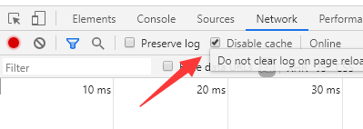

博客IDE环境和碎碎念
前言
Markdown
一种轻量级标记语言，它允许人们使用易读易写的纯文本格式编写文档
详细的Markdown语法本文不做额外赘述，推荐一本电子书， 点击此处
csdn博文系统也推出了支持md语法的在线编辑器，在首次使用时，默认会有一篇关于md语法的介绍文章，笔者觉得还不错
印象笔记在2018年增加了对于md笔记的支持，快捷栏中有各种md标记的选项，用起来和编辑普通的文章差不多，整体的交互流程属于新手友好
IDE推荐
编写本文的时候，已经是2020年，vscode你必然是听说过的，毕竟能想到使用git page来搭建博文系统的都是业内人士。早些年的时候，sublime、atom也是不错的选择，经过两年开源社区的推动vscode发展迅速，成为入场的首选。
微软巨头和开源社区的关系从割裂的状态，成功跨入蜜月期：拥抱开源
笔者所在的公司在最近两年也积极的引入Java体系，说白了就是大环境如此，换言之在业务开发上，如今的Java体系在国内属实真香
vscode插件推荐

插件都有自带的Readme，介绍基本用法，核心功能，部分插件作者还提供动态效果展示图
Paste Image，配合hugo的图片插件方式，很便捷的就能引入图片
快捷键没记住，打开vscode快捷键管理菜单，搜索md，多看几遍
重看一遍插件使用说明
hugo
笔者从hexo切换到了hugo，爱折腾是我的天性，终归是耐不住性子安安静静写文章
- hugo支持在单独的文件夹放置图片和md文档
- academic主题在设计上支持多种各式的文章样式
- 各种便捷的自定义拓展
- 样式上：随笔、演讲、电子书
- 灵活性：自定义整体风格、自定义css样式
这款主题对于中文的支持还不是很完善，主要是从视觉的角度来说，字体大小不太符合中文阅读习惯，hexo的开发人员大部分为国人，在这点优于hugo
但是呢，自己动手丰衣足食，浏览器审核元素，引入custom.css文件， 官方链接
academic
官网默认exampleSite，menu引入采用#组件的方式，推荐使用url
url的模式，点击导航栏能实现单页的跳转，而非在首页进行滚动，这点纯属个人喜好
结尾
小朋友又要吐槽了，你怎么从头到尾都说的模模糊糊，细节什么的都不提
我想说的是，目前使用的这些工具：
- 官方手册
- 插件说明
快速上手新技术，推荐先阅读官网文档，粗读不求一遍看懂，至少心里有个数。
和看书的道理一样，先看目录，搞清楚作者准备讲什么。
彩蛋
切换hugo academic内置风格样式，发布到站点，访问时，风格没有发生变换。
聪明的小伙伴已经想到了，清空本地浏览器缓存，能解决问题。
机智的我：F12开发者模式，切换到network，勾选disable cache，刷新，搞定！

向天龙
年轻嘛，你让我安安静静看书，不可能的！必须要写出来。